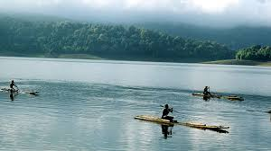

| ERAVIKULAM - NATIONAL PARK Eravikulam National Park is a 97 km 2 national park located along the Western Ghats in the Idukki and Ernakulam districts of Kerala in India. Situated between 10º05'N and 10º20' north, and 77º0' and 77º10' east, (See: map.) it is the first national park in Kerala. |
| GEOGRAPHY The main body of the park consists of a high rolling hill plateau with a base elevation of about 2,000 m. The terrain consists of high altitude grasslands interspersed with sholas. Anamudi, 2,695 meters, the highest peak in India south of the Himalayas is inside this park. Many perennial streams criss-cross the park. They merge to form tributaries of the Periyar river in the west and of the Cauvery River in the east. See:.[2] Lakkom Water falls is in this region. |
| TRAKKING ACTIVITIES AT ERAVIKULAM  Ever wanted to snuggle in the lap of bustling wilderness? Then, Eravikulam is your choice. Here are some of the trekking trails offered at Eravikulam such as Kurinji Trail, Lakkom Waterfalls and Cascade Walk. Know more about the trekking trails of Eravikulam Camping Stay at Lakkom Log House is the only camping programme at Eravikulam National Park. The Shola forests here guards a deep secret, a ravishing spot hidden deep in the woods- the Lakkom Log House. |